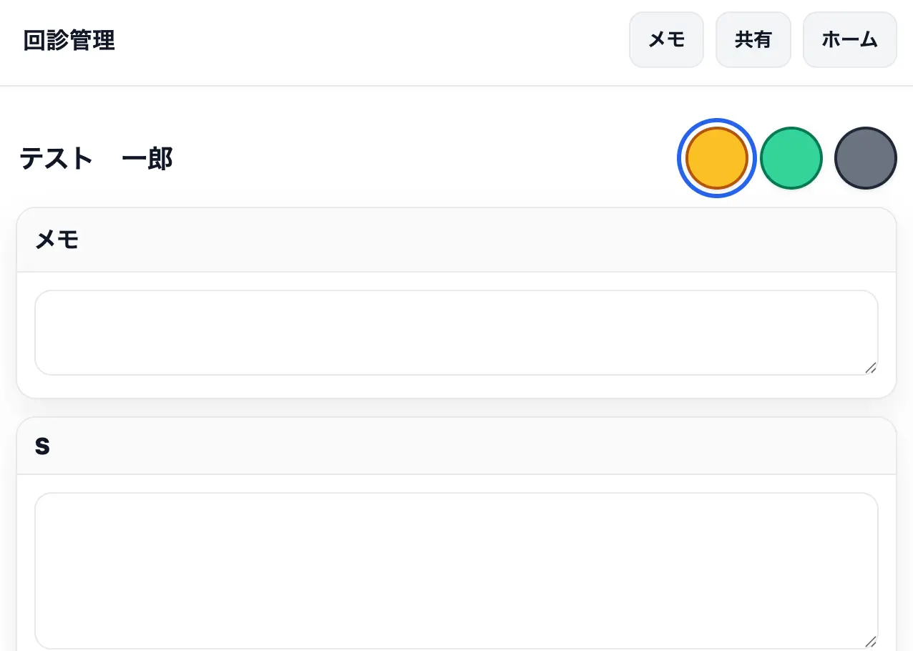
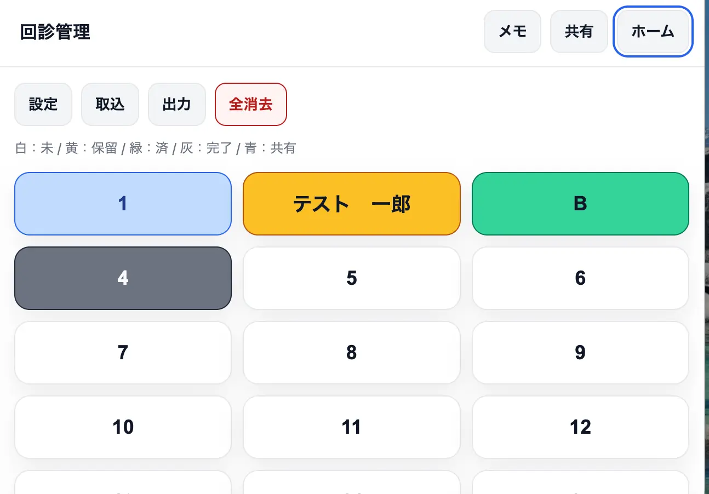
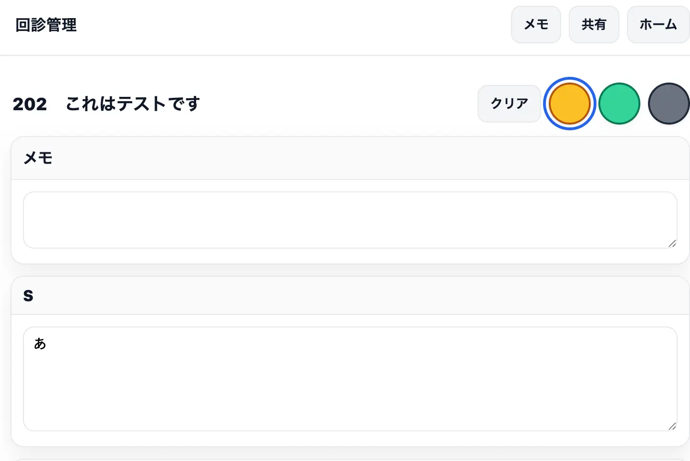
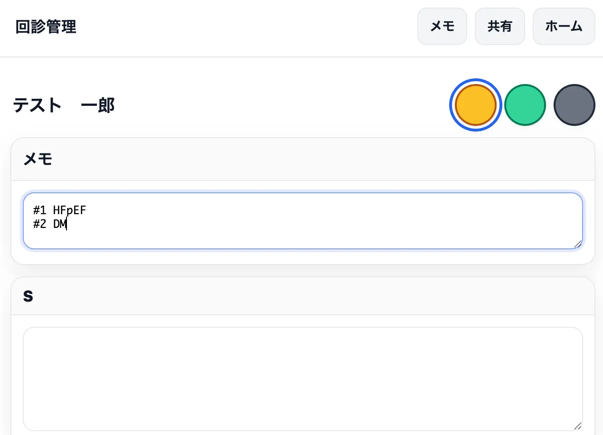
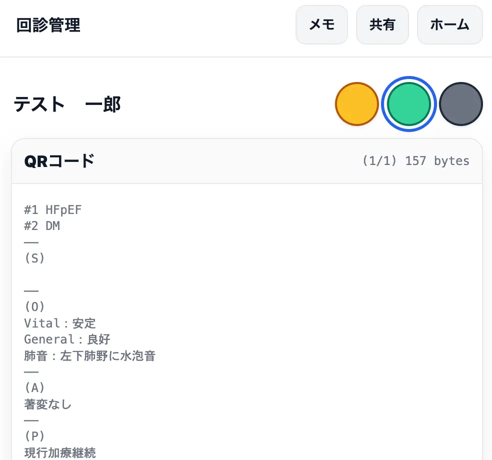

詳細入力画面
概要
患者名の入力と、SOAP形式での回診メモを記録する画面です。ホーム画面で患者マスをタップすると開きます。
患者名


画面上部の入力欄に患者名を入力します。名前を入れると、ホーム画面の患者マスにも名前が表示されます。空欄の場合は番号が表示されます。
ヒント: 病棟回診などでは「102 テスト一郎」のように病室番号を名前の前に入れておくと、ホーム画面で部屋順が一目でわかり便利です。
ステータスボタン
画面上部と下部に同じボタンがあります。
| ボタン | ステータス |
|---|---|
| 黄ボタン | 保留 |
| 緑ボタン | 回診済（QRコードが表示されます） |
| 灰ボタン | 完了 |
現在選択中のボタンは強調表示されます。同じボタンをもう一度タップすると白（未回診）に戻ります。
クリアボタン

ステータスボタンの左に「クリア」ボタンがあります（上部・下部の両方）。設定で指定した項目の入力内容を一括で消去します。デフォルトではS・O・Aがクリア対象です。
→ クリア対象のカスタマイズは 07_設定 を参照
メモ

SOAPとは別に使える自由メモ欄です。QRコードを生成した際に、SOAP内容の先頭に表示されます。プロブレムリストなどカルテの冒頭に毎回記載するような情報を入れておくと便利です。
S（Subjective / 主観的情報）
患者の訴え・自覚症状を入力します。デフォルトでは空欄のまま出力されます。定型文を使いたい場合は設定で変更できます。
O（Objective / 客観的情報）
バイタルサイン
| 項目 | 単位 |
|---|---|
| SpO2 | ％（メモ欄あり：例「RA」「カニューレ2L」など） |
| 呼吸数 | 回 |
| 血圧 | 収縮期 / 拡張期（mmHg） |
| 脈拍 | 回 |
| 体温 | ℃ |
すべて空欄の場合は「Vital：安定」と出力されます。バイタル項目のカスタマイズは現時点では非対応です。
身体所見（O項目）
設定でカスタマイズ可能な所見項目です。初期設定では以下の4項目があります。
| 項目 | 「正常」ボタンを押した場合の出力 |
|---|---|
| General | 良好 |
| 肺音 | 明らかなラ音なし |
| 腸音 | 正常 |
| 腹部 | 平坦軟、圧痛なし |
- 「正常」ボタンをタップするとオン／オフが切り替わります
- テキストを入力すると「正常」ボタンは自動でオフになります
- テキスト欄には異常所見を入力してください（正常の場合はボタンのみ）
- 確認・評価していない項目は何も選択せずに空欄のままでかまいません
O（フリーテキスト）
上記の項目に当てはまらない所見を自由に記入できます。
A（Assessment / 評価）
空欄の場合はデフォルト文言（初期値：「著変なし」）が出力されます。
P（Plan / 計画）
空欄の場合はデフォルト文言（初期値：「現行加療継続」）が出力されます。
共有
他端末（他の医師・看護師等）に引き継ぐ情報を入力します。鎮痛薬の処方希望など、これまで口頭やメモ書きで渡していたような情報の受け渡しを想定しています。
→ 詳細は 05_QRコード を参照
QRコード（ステータスが緑のとき）

ステータスを「緑（回診済）」にすると、SOAP内容のQRコードが自動生成されます。
QRコードの上にテキストプレビューが表示されます。QRコードにはこのテキストと同じ内容が格納されています。
- データ量が多い場合は複数QRに分割されます（「前」「次」ボタンで切り替え）
- QRコードリーダーを電子カルテに接続することで、読み取ったテキストをそのまま入力できます。カルテの転記したい欄にカーソルを置いた状態で読み取ってください（キーボードと同じ動作をします）
- リーダーの電子カルテへの接続可否は施設のシステム担当者にご確認ください